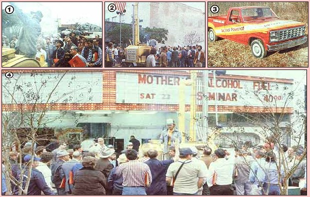

Here's the latest word on our traveling ethanol fuel seminars.
Last summer, the big news buzzing all around MOTHER's Hendersonville, North Carolina offices was the series of hands-on seminars she was offering-for the first time-to anyone who wanted firsthand know-how on a whole variety of MOTHER-type subjects. Interestingly enough, the farmer's alcohol classroom was nearly "bustin' at the seams" every session . . . because of the overwhelming popularity of the subject of homegrown fuel. But more surprising were the letters we received-many of which were from farmers asking us when we would be putting our alcohol fuel program on the road . . . so folks wouldn't have to leave their crops at the most critical time of year, but would still be able to benefit from a good solid day's worth of ethanol education.
Well, within a few weeks, MOTHER's staffers were busy planning their first "alcohol road show" (which would, soon after, visit the nation's Corn Belt residents) . . . and were equally engrossed in building a trailer, tuning up the alcohol truck, and generally preparing to present a first-time, first-class, away-from home demonstration on the production of homemade ethanol fuel. The initial series of traveling seminars (held in the states of Michigan, Wisconsin, Minnesota, Iowa, Nebraska, and Kansas) were such a success that-immediately upon returning from the Midwest-MOM's alcohol crew got busy mapping out a second series . . . to be held in the South's Gulf states.
The Dixie trip (covering Texas, Louisiana, and Alabama) was-as expected -a real hit, too. Besides having our six-inch column ethanol-maker on exhibit and in operation at each stop, we brought along our smaller three-inch column distillery, plus a display section from our "in-the-works" 12-inch column plate still, and-of course-a variety of converted to-ethanol vehicles and machinery . . . including a portable generator, a home furnace unit, our old reliable Chevy pickup, and our new Ford truck.
Needless to say, seminar attendees eagerly soaked up every bit of alcohol-related information available . . . and took advantage of the opportunity to ask specific questions (the kind it's hard to find book answers to) of the instructors. And the student-teacher exchanges were mutually beneficial, since MOTHER's crew brought home all sorts of useful regional information on crops, equipment, and local alcohol experiments . . . to incorporate in our future seminars! All facts considered, it'd be hard to imagine why anyone who's becoming increasingly strapped by the high price of petroleum fuel (and who isn't these days?) would want to miss an ethanol fuel seminar.
Fortunately, MOTHER is planning more . . . perhaps to be held in your area. So keep a weather eye on your local newspapers and TV-and an ear cocked to your radio-so you'll know when MOTHER's alcohol fuel seminar will visit you . . . we're sure you won't be disappointed!
EDITOR'S NOTE: For information, on how to obtain plans to build MOTHER's six-inch column still (as shown in the accompanying photos), or her three-inch distillery-and on how to order any of the other alcohol-fuel-related items we have available-turn to the ad on page 176.
|
 [1] A member of MOTHER'S alcohol fuel team explains the deistillation process. [2] Crowds view MOM's new six-inch column still in Louisiana. [3] MOTHER's latest alcohol-powered truck. [4] Seminar attendees ask questions while the still is demonstrated. |
|
|